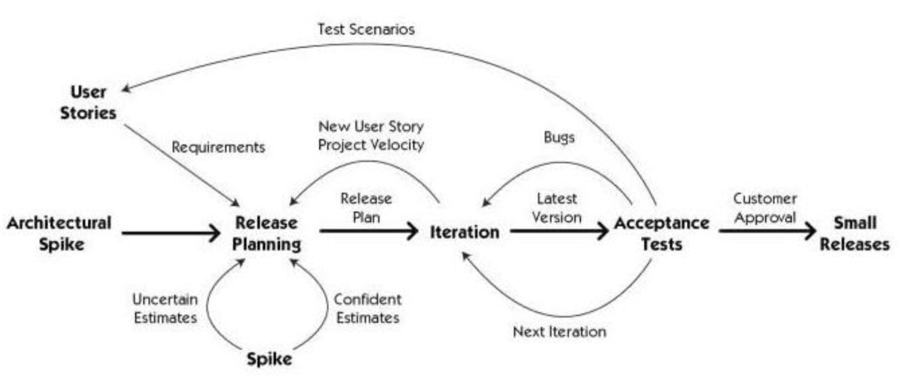
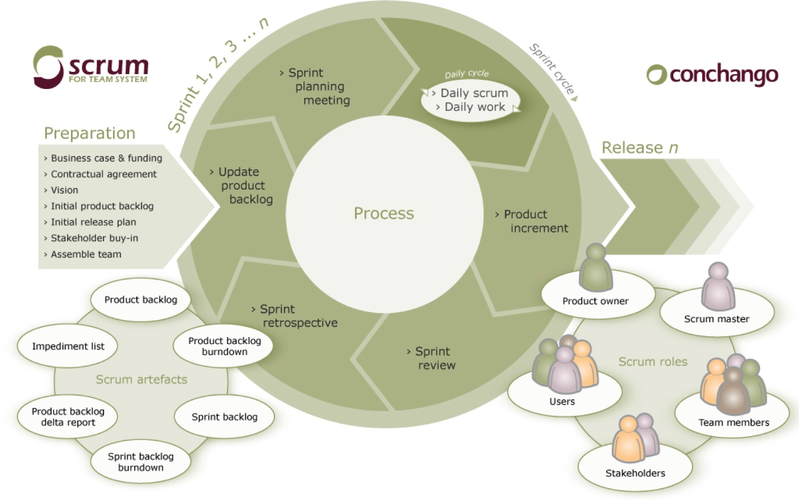
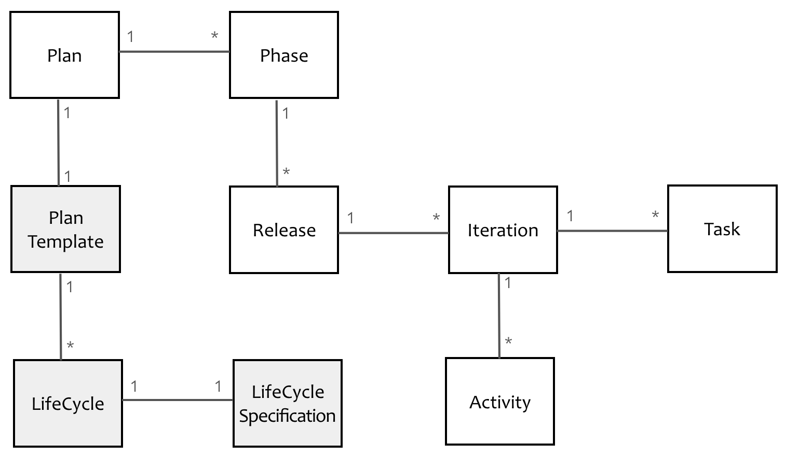

- 001 「战略篇」访谈 DDD 和微服务是什么关系？.md.html
- 002 「战略篇」开篇词：领域驱动设计，重焕青春的设计经典.md.html
- 003 领域驱动设计概览.md.html
- 004 深入分析软件的复杂度.md.html
- 005 控制软件复杂度的原则.md.html
- 006 领域驱动设计对软件复杂度的应对（上）.md.html
- 007 领域驱动设计对软件复杂度的应对（下）.md.html
- 008 软件开发团队的沟通与协作.md.html
- 009 运用领域场景分析提炼领域知识（上）.md.html
- 010 运用领域场景分析提炼领域知识（下）.md.html
- 011 建立统一语言.md.html
- 012 理解限界上下文.md.html
- 013 限界上下文的控制力（上）.md.html
- 014 限界上下文的控制力（下）.md.html
- 015 识别限界上下文（上）.md.html
- 016 识别限界上下文（下）.md.html
- 017 理解上下文映射.md.html
- 018 上下文映射的团队协作模式.md.html
- 019 上下文映射的通信集成模式.md.html
- 020 辨别限界上下文的协作关系（上）.md.html
- 021 辨别限界上下文的协作关系（下）.md.html
- 022 认识分层架构.md.html
- 023 分层架构的演化.md.html
- 024 领域驱动架构的演进.md.html
- 025 案例 层次的职责与协作关系（图文篇）.md.html
- 026 限界上下文与架构.md.html
- 027 限界上下文对架构的影响.md.html
- 028 领域驱动设计的代码模型.md.html
- 029 代码模型的架构决策.md.html
- 030 实践 先启阶段的需求分析.md.html
- 031 实践 先启阶段的领域场景分析（上）.md.html
- 032 实践 先启阶段的领域场景分析（下）.md.html
- 033 实践 识别限界上下文.md.html
- 034 实践 确定限界上下文的协作关系.md.html
- 035 实践 EAS 的整体架构.md.html
- 036 「战术篇」访谈：DDD 能帮开发团队提高设计水平吗？.md.html
- 037 「战术篇」开篇词：领域驱动设计的不确定性.md.html
- 038 什么是模型.md.html
- 039 数据分析模型.md.html
- 040 数据设计模型.md.html
- 041 数据模型与对象模型.md.html
- 042 数据实现模型.md.html
- 043 案例 培训管理系统.md.html
- 044 服务资源模型.md.html
- 045 服务行为模型.md.html
- 046 服务设计模型.md.html
- 047 领域模型驱动设计.md.html
- 048 领域实现模型.md.html
- 049 理解领域模型.md.html
- 050 领域模型与结构范式.md.html
- 051 领域模型与对象范式（上）.md.html
- 052 领域模型与对象范式（中）.md.html
- 053 领域模型与对象范式（下）.md.html
- 054 领域模型与函数范式.md.html
- 055 领域驱动分层架构与对象模型.md.html
- 056 统一语言与领域分析模型.md.html
- 057 精炼领域分析模型.md.html
- 058 彩色 UML 与彩色建模.md.html
- 059 四色建模法.md.html
- 060 案例 订单核心流程的四色建模.md.html
- 061 事件风暴与业务全景探索.md.html
- 062 事件风暴与领域分析建模.md.html
- 063 案例 订单核心流程的事件风暴.md.html
- 064 表达领域设计模型.md.html
- 065 实体.md.html
- 066 值对象.md.html
- 067 对象图与聚合.md.html
- 068 聚合设计原则.md.html
- 069 聚合之间的关系.md.html
- 070 聚合的设计过程.md.html
- 071 案例 培训领域模型的聚合设计.md.html
- 072 领域模型对象的生命周期-工厂.md.html
- 073 领域模型对象的生命周期-资源库.md.html
- 074 领域服务.md.html
- 075 案例 领域设计模型的价值.md.html
- 076 应用服务.md.html
- 077 场景的设计驱动力.md.html
- 078 案例 薪资管理系统的场景驱动设计.md.html
- 079 场景驱动设计与 DCI 模式.md.html
- 080 领域事件.md.html
- 081 发布者—订阅者模式.md.html
- 082 事件溯源模式.md.html
- 083 测试优先的领域实现建模.md.html
- 084 深入理解简单设计.md.html
- 085 案例 薪资管理系统的测试驱动开发（上）.md.html
- 086 案例 薪资管理系统的测试驱动开发（下）.md.html
- 087 对象关系映射（上）.md.html
- 088 对象关系映射（下）.md.html
- 089 领域模型与数据模型.md.html
- 090 领域驱动设计对持久化的影响.md.html
- 091 领域驱动设计体系.md.html
- 092 子领域与限界上下文.md.html
- 093 限界上下文的边界与协作.md.html
- 094 限界上下文之间的分布式通信.md.html
- 095 命令查询职责分离.md.html
- 096 分布式柔性事务.md.html
- 097 设计概念的统一语言.md.html
- 098 模型对象.md.html
- 099 领域驱动设计参考过程模型.md.html
- 100 领域驱动设计的精髓.md.html
- 101 实践 员工上下文的领域建模.md.html
- 102 实践 考勤上下文的领域建模.md.html
- 103 实践 项目上下文的领域建模.md.html
- 104 实践 培训上下文的业务需求.md.html
- 105 实践 培训上下文的领域分析建模.md.html
- 106 实践 培训上下文的领域设计建模.md.html
- 107 实践 培训上下文的领域实现建模.md.html
- 108 实践 EAS 系统的代码模型.md.html
- 109 后记：如何学习领域驱动设计.md.html
007 领域驱动设计对软件复杂度的应对（下）
限界上下文的分而治之
在第1-4课中分析缓存访问接口的归属时，我们将接口放在了系统的应用层。从层次的职责来看，这样的设计是合理的，但它却使得系统的应用层变得更加臃肿，职责也变得不够单一了。这是分层架构与六边形架构的局限所在，因为这两种架构模式仅仅体现了软件系统的逻辑划分。倘若我们将一个软件系统视为一个纵横交错的魔方，前述的逻辑划分仅仅是一种水平方向的划分；至于垂直方向的划分，则是面向垂直业务的切割。这种方式更利于控制软件系统的规模，将一个庞大的软件系统划分为松散耦合的多个小系统的组合。
针对前述案例，我们可以将缓存视为一个独立的子系统，它同样拥有自己的业务逻辑和技术实现，因而也可以为其建立属于缓存领域的分层架构。在架构的宏观视角，这个缓存子系统与订单子系统处于同一个抽象层次。这一概念在领域驱动设计中，被称之为限界上下文（Bounded Context）。
针对庞大而复杂的问题域，限界上下文采用了“分而治之”的思想对问题域进行了分解，有效地控制了问题域的规模，进而控制了整个系统的规模。一旦规模减小，无论业务复杂度还是技术复杂度，都会得到显著的降低，在对领域进行分析以及建模时，也能变得更加容易。限界上下文对整个系统进行了划分，在将一个大系统拆分为一个个小系统后，我们再利用分层架构与六边形架构思想对其进行逻辑分层，以确保业务逻辑与技术实现的隔离，其设计会变得更易于把控，系统的架构也会变得更加清晰。
案例：限界上下文帮助架构的演进
国际报税系统是为跨国公司的驻外出差雇员（系统中被称之为 Assignee）提供方便一体化的税收信息填报平台。客户是一家会计师事务所，该事务所的专员（Admin）通过该平台可以收集雇员提交的报税信息，然后对这些信息进行税务评审。如果 Admin 评审出信息有问题，则返回给 Assignee 重新修改和填报。一旦信息确认无误，则进行税收分析和计算，并获得最终的税务报告提交给当地政府以及雇员本人。
系统主要涉及的功能包括：
- 驻外出差雇员的薪酬与福利
- 税收计划与合规评审
- 对税收评审的分配管理
- 税收策略设计与评审
- 对驻外出差雇员的税收合规评审
- 全球的 Visa 服务
主要涉及的用户角色包括：
- Assignee：驻外出差雇员
- Admin：税务专员
- Client：出差雇员的雇主
在早期的架构设计时，架构师并没有对整个系统的问题域进行拆分，而是基于用户角色对系统进行了简单粗暴的划分，分为了两个相对独立的子系统：Frond End 与 Office End，这两个子系统单独部署，分别面向 Assignee 与 Admin。系统之间的集成则通过消息和 Web Service 进行通信。两个子系统的开发分属不同的团队，Frond End 由美国的团队负责开发与维护，而 Office End 则由印度的团队负责。整个架构如下图所示：
采用这种架构面临的问题如下：
- 庞大的代码库：整个 Front End 和 Office End 都没有做物理分解，随着需求的增多，代码库会变得格外庞大。
- 分散的逻辑：系统分解的边界是不合理的，没有按照业务分解，而是按照用户的角色进行分解，因而导致大量相似的逻辑分散在两个不同的子系统中。
- 重复的数据：两个子系统中存在业务重叠，因而也导致了部分数据的重复。
- 复杂的集成：Front End 与 Office End 因为某些相关的业务需要彼此通信，这种集成关系是双向的，且由两个不同的团队开发，导致集成的接口混乱，消息协议多样化。
- 知识未形成共享：两个团队完全独立开发，没有掌握端对端的整体流程，团队之间没有形成知识的共享。
- 无法应对需求变化：新增需求包括对国际旅游、Visa 的支持，现有系统的架构无法很好地支持这些变化。
采用领域驱动设计，我们将架构的主要关注点放在了“领域”，与客户进行了充分的需求沟通和交流。通过分析已有系统的问题域，结合客户提出的新需求，对整个问题域进行了梳理，并利用限界上下文对问题域进行了分解，获得了如下限界上下文：
- Account Management：管理用户的身份与配置信息；
- Calendar Management：管理用户的日程与旅行足迹。
之后，客户希望能改进需求，做到全球范围内的工作指派与管理，目的在于提高公司的运营效率。通过对领域的分析，我们又识别出两个限界上下文。在原有的系统架构中，这两个限界上下文同时处于 Front End 与 Office End 之中，属于重复开发的业务逻辑：
- Work Record Management：实现工作的分配与任务的跟踪；
- File Sharing：目的是实现客户与会计师事务所之间的文件交换。
随着我们对领域知识的逐渐深入理解与分析，又随之识别出如下限界上下文：
- Consent：管理合法的遵守法规的状态；
- Notification：管理系统与客户之间的交流；
- Questionnaire：对问卷调查的数据收集。
这个领域分析的过程实际上就是通过对领域的分析而引入限界上下文对问题域进行分解，通过降低规模的方式来降低问题域的复杂度；同时，通过为模型确定清晰的边界，使得系统的结构变得更加的清晰，从而保证了领域逻辑的一致性。一旦确定了清晰的领域模型，就能够帮助我们更加容易地发现系统的可重用点与可扩展点，并遵循“高内聚、松耦合”的原则对系统职责进行合理分配，再辅以分层架构以划分逻辑边界，如下图所示：
我们将识别出来的限界上下文定义为微服务，并对外公开 REST 服务接口。UI Applications 是一个薄薄的展现层，它会调用后端的 RESTful 服务，也使得服务在保证接口不变的前提下能够单独演化。每个服务都是独立的，可以单独部署，因而可以针对服务建立单独的代码库和对应的特性团队（Feature Team）。服务的重用性和可扩展性也有了更好的保障，服务与 UI 之间的集成变得更简单，整个架构会更加清晰。
领域模型对领域知识的抽象
领域模型是对业务需求的一种抽象，其表达了领域概念、领域规则以及领域概念之间的关系。一个好的领域模型是对统一语言的可视化表示，通过它可以减少需求沟通可能出现的歧义；通过提炼领域知识，并运用抽象的领域模型去表达，就可以达到对领域逻辑的化繁为简。模型是封装，实现了对业务细节的隐藏；模型是抽象，提取了领域知识的共同特征，保留了面对变化时能够良好扩展的可能性。
案例：项目管理系统的领域模型
我们开发的项目管理系统需要支持多种软件项目管理流程，如瀑布、RUP、XP 或者 Scrum，这些项目管理流程是迥然不同的，如果需要各自提供不同的解决方案，则会使得系统的模型变得非常复杂，也可能会引入许多不必要的重复。通过领域建模，我们可以对项目管理领域的知识进行抽象，寻找具有共同特征的领域概念。这就需要分析各种项目管理流程的主要特征与表现，才能从中提炼出领域模型。
瀑布式软件开发由需求、分析、设计、编码、测试、验收六个阶段构成，每个阶段都由不同的活动构成，这些活动可能是设计或开发任务，也可能是召开评审会。流程如下图所示：
RUP 清晰地划分了四个阶段：先启阶段（Inception）、细化阶段（Elaboration）、构造阶段（Construction）与交付阶段（Transition），每个阶段可以包含一到多个迭代，每个迭代有不同的工作，如业务建模、分析设计、配置与变更管理等，RUP 的流程如下图所示：
XP 作为一种敏捷方法，采用了迭代的增量式开发，提倡为客户交付具有业务价值的可运行软件。在执行交付计划之前，XP 要求团队对系统的架构做一次预研（Architectual Spike，又被译为架构穿刺）。当架构的初始方案确定后，就可以进入每次小版本的交付。每个小版本交付又被划分为多个周期相同的迭代。在迭代过程中，要求执行一些必须的活动，如编写用户故事、故事点估算、验收测试等。XP 的流程如下图所示：

Scrum 同样是迭代的增量开发过程。项目在开始之初，需要在准备阶段确定系统愿景、梳理业务用例、确定产品待办项（Product Backlog）、制定发布计划以及组建团队。一旦在确定了产品待办项以及发布计划之后，就进入了 Sprint 迭代阶段。Sprint 迭代过程是一个固定时长的项目过程，在这个过程中，整个团队需要召开计划会议、每日站会、评审会议和回顾会议。Scrum 的流程如下图所示：

不同的项目管理流程具有不同的业务概念。例如，瀑布式开发分为了六个阶段，但却没有发布和迭代的概念；RUP 没有发布的概念，而 Scrum 又为迭代引入了 Sprint 的概念。
不同的项目管理流程具有不同的业务规则。例如，RUP 的四个阶段会包含多个迭代周期，每个迭代周期都需要完成对应的工作，只是不同的工作在不同阶段所占的比重不同。XP 需要在进入发布阶段之前，进行架构预研，而在每次小版本发布之前，都需要进行验收测试和客户验收。Scrum 的 Sprint 是一个基本固定的流程，每个迭代召开的四会（计划会议、评审会议、回顾会议与每日站会）都有明确的目标。
领域建模就是要从这些纷繁复杂的领域逻辑中寻找到能够表示项目管理领域的概念，并利用面向对象建模范式或其他范式对概念进行抽象，并确定它们之间的关系。经过对这些项目管理流程的分析，我们虽然发现在业务概念和规则上确有不同之处，但由于它们都归属于软件开发领域，我们自然也能寻找到某些共同特征的蛛丝马迹。
首先，从项目管理系统的角度看，无论针对何种项目管理流程，我们的主题需求是不变的，就是要为这些管理流程制定软件开发计划（Plan）。不同之处在于，计划可以由多个阶段（Phase）组成，也可以由多个发布（Release）组成。一些项目管理流程没有发布的概念，我们可以认为是一个发布。那么，到底是发布包含了多个阶段，还是阶段包含了多个发布呢？我们发现在 XP 中，明显地划分了两个阶段：Architecture Spike 与 Release Planning，而发布只属于 Release Planning 阶段。因而从概念内涵上，我们可以认为是阶段（Phase）包含了发布（Release）。每个发布又包含了一到多个迭代（Iteration），至于 Scrum 的 Sprint 概念其实可以看做是迭代的一种特例。每个迭代可以开展多种不同的活动（Activity），这些活动可以是整个团队参与的会议，也可以是部分成员或特定角色执行的实践。对于计划而言，我们还需要跟踪任务（Task）。与活动不同，任务具有明确的计划起止时间、实际起止时间、工作量、优先级与承担人。
于是，我们提炼出如下的统一领域模型：
为了项目管理者更加方便地制定项目计划，产品经理提出了计划模板功能。当管理者选择对应的项目管理生命周期类型后，系统会自动创建满足其规则的初始计划。基于该需求，我们更新了之前的领域模型：

在增加的领域模型中，LifeCycle Specification 是一个隐含的概念，遵循领域驱动设计提出的规格（Specification）模式，封装了项目开发生命周期的约束规则。
领域模型以可视化的方式清晰地表达了业务含义，我们可以根据这个模型来指导后面的程序设计与编码实现。当增加新的需求或者需求发生变化时，我们能够敏锐地捕捉到现有模型的不匹配之处，并对其进行更新。领域模型传递了知识，可以作为交流的载体，符合人们的心智模型，有利于让开发人员从纷繁复杂的业务中解脱出来。这是领域驱动设计针对第04课中遇到的第三个问题——控制业务复杂度的解答。